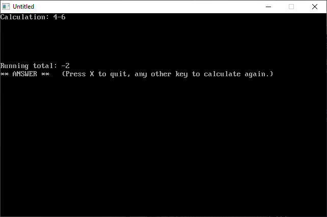
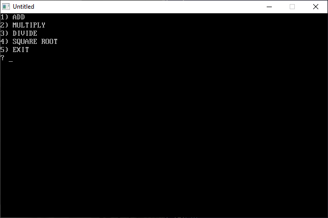
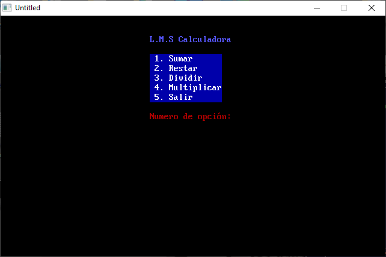

Home • News • GitHub • Wiki • Samples • InForm • GX • QBjs • Community • More…
SAMPLE: CALC DW

Author
Description
' CALC.BAS
' by William Loughner
' Copyright (c) 1994 DOS Resource Guide
' Published in Issue #14, March 1994, page 58
==============================================================================
----------
CALC.BAS
----------
SYSTEM REQUIREMENTS:
The version of QBasic that comes with DOS 5 or later, or Microsoft Quick Basic
4.x.
WHAT CALC.BAS DOES:
CALC.BAS is a simple calculator program that you can use whenever you need to
make arithmetic calculations involving addition, subtraction, multiplication,
division, and raising to a power (exponentiation).
USING CALC.BAS
To load the program, type QBASIC CALC.BAS (using path names if necessary) at
the DOS prompt. Then run the program by selecting the Start option in QBasic's
Run menu, or press Shift-F5. After clearing the screen, CALC.BAS displays a
line where you may enter your calculation and a second line that keeps a
running total for you. Like a standard calculator, it displays keystrokes as
you type them and evaluates expressions from left to right. When you type the
equal sign (=) or press Enter, the program clears the calculation, tells you
that the running total is the answer, and reminds you what keystrokes to press
to proceed.
Permissible keystrokes are the numbers from zero to 9; a decimal point; the
operators for addition, subtraction, multiplication, division, and raising to
a power (+, -, *, /, and ^); open and close parentheses (); open and close
brackets []; an equal sign; Enter; and an upper- or lowercase "x." If you
press other keys, CALC.BAS issues an error message. Typing x or X ends the
program.
CALC.BAS can handle one level of parentheses. An open parentheses sets the
running total to zero, and a close parentheses resets the running total to
that of the entire expression.
To access CALC.BAS quickly and easily, create the following one-line batch
file, and place it in your C:\BATCH directory:
@QBASIC /RUN CALC
If you name this batch file CALC.BAT and include the C:\BATCH directory in the
PATH statement in your AUTOEXEC.BAT file, you can start QBasic and run
CALC.BAS by typing CALC at the DOS prompt.
For further details on CALC.BAS, see "It All Adds Up" (Readers' Queue, DRG
#14, March 1994, page 58).
File(s)
Additional Image(s)
 